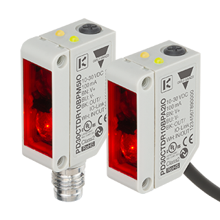
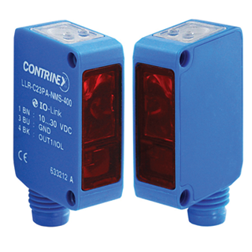

IO-Link Practical Course · #5
IO-Link 1.1
vs 1.0
Two sensors that look identical — one version number that changes everything.

Carlo Gavazzi PD30
detects objects · photoelectric
IO-Link 1.1
Contrinex LLR
detects objects · through-beam
IO-Link 1.0Same COM2 speed · same M8 connector · same basic job. → let's see what's different.
Master health
Temperature
--°C
inside the master
Voltage
--V
your 24V supply
Current
--mA
all sensors combined
Status
0
no faults reported
What you can actually change — these write to the sensor
Inside the IODD — the XML file that describes each device
The 4 differences — IO-Link V1.0 vs V1.1
1
Transmission rate
masters must now do 230 kBaud
V1.0COM1 4.8 · COM2 38.4 kBaud.
COM3 (230.4) optional
COM3 (230.4) optional
V1.1230.4 kBaud mandatory for the master
A device only ever supports one rate — which is why the v1.1 PD30 runs COM2, not COM3.
2
Data Storage
swap a sensor, settings come back
V1.0✘ none — reconfigure every replacement by hand
V1.1✔ master stores settings and auto-restores them
Needs V1.1 in both master and device. This is the one that saves downtime.
3
Process data width
room for richer sensor data
V1.0smaller payload per port
V1.1up to 32 bytes per port (each direction)
The spec lists 32 bytes as a V1.1 addition but doesn't state the V1.0 ceiling — don't quote a number for 1.0.
4
Backward compatibility
so always buy a 1.1 master
V1.1 masterruns both V1.0 and V1.1 devices
V1.0 masterruns V1.0 devices only
V1.1 features only work if the device supports them too.
Source: IO-Link Community — “IO-Link System Description: Technology and Application”, §2.6
But even V1.0 beats a standard sensor
Standard sensor
no IO-Link · plain switching output
- One bit — on or off, nothing else
- Controller has no idea what's plugged in
- Adjust it with a screwdriver at the machine
- No diagnostics — it works, or it silently doesn't
- Level signal, degrades over long cable
+ V1.0 ADDS
IO-Link 1.0
already a big step up
- Identity — vendor, device ID & serial read automatically
- Remote configuration — the v1.0 Contrinex lets you write sensitivity and fire a teach command over the wire
- More than on/off — stability alarm, detection counter, temperature
- Events & diagnostics reported to the controller
- Digital signal — immune to noise; falls back to SIO
+ V1.1 ADDS
IO-Link 1.1
on top of everything above
- Data Storage — swap a device, settings restored automatically
- Process data up to 32 bytes
- COM3 (230.4 kBaud) mandatory for masters
- In practice: far richer parameter sets (26 vs 10 here)
Head to head — your two selected ports
The one that matters
Data Storage
A sensor fails at 2am. An operator plugs in a new one. The master writes every setting back —
automatically. The line runs. On 1.0, someone's walking out there with a laptop.
If you're buying today
- Always buy a 1.1 master — it runs old and new devices
- Prefer 1.1 devices — mainly for Data Storage
- A 1.0 device isn't junk — just no auto-restore, less data
Thanks for watching
@hamedadefuwa
Next up — we pull this data out with a PLC.